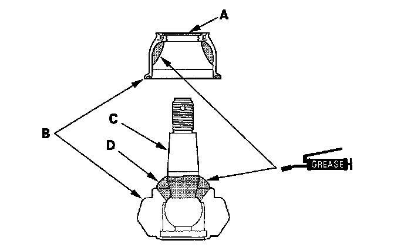
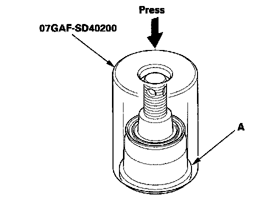

Front Suspension
Ball Joint Boot ReplacementSpecial Tools Required
Hub Dis/Assembly Tool 07GAF-SD40200
1. Remove the lower arm.
2. Remove the boot.
3. Pack the interior and lip (A) of a new boot with grease. Keep the grease off of the boot-to-lower arm mating surfaces (B).

4. Wipe the grease off the tapered portion of the pin (C) and pack fresh grease into the base (D). Do not let dirt or other foreign materials get into the boot.
5. Install the boot on the ball joint, then squeeze it gently to force out any air.
6. Press the boot with the hub dis/assembly tool until the bottom seats on the lower arm (A) all the way around.

7. After installing a boot, wipe any grease off the exposed portion of the ball joint pin.
8. Install the lower arm.